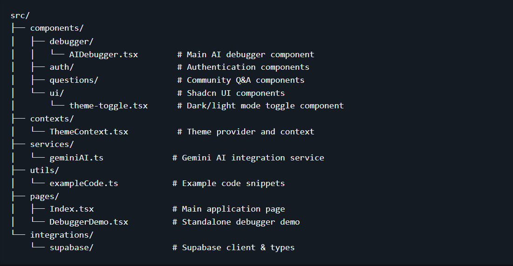

De-burger.
Grilling Bugs, Serving Solutions
Problem Statement
The current debugging process is often time-consuming and frustrating, requiring developers to manually sift through complex code and cryptic error messages to identify root causes. This lack of intelligent insight and automated assistance significantly hinders productivity and prolongs development cycles. There is a clear need for an advanced solution that can simplify error analysis, provide actionable fix suggestions, and streamline the entire debugging workflow.
Solution
Debugging code is a persistent bottleneck in software development, often leading to significant frustration and wasted time as developers grapple with obscure errors and manual troubleshooting. Our answer to this critical challenge is Deburger, an innovative AI-based code debugger designed to fundamentally transform this process. Deburger harnesses the power of artificial intelligence to swiftly pinpoint errors, visually highlight their location within your code, and intelligently propose precise fixes or provide the correct code snippets. This means less guesswork and more efficient problem-solving, allowing developers to focus on creation rather than endless debugging loops.
Furthermore, we're extending Deburger's utility with a dynamic community feature. This integrated platform allows users to seamlessly post their perplexing coding dilemmas, tapping into a collective intelligence where experienced peers can offer insights and solutions. Conversely, developers can actively browse through a repository of shared problems, contributing their expertise and helping others overcome hurdles. This unique blend of cutting-edge AI and collaborative human knowledge makes Deburger not just a tool, but a comprehensive ecosystem for rapid, intelligent, and communal code resolution.
Features
- 🤖 AI Code Debugger :
- Smart Code Analysis: Paste your code and get instant analysis with issues identified
- Multi-language Support: Supports JavaScript, TypeScript, Python, Java, C++, C#, PHP, Ruby, Go, Rust, Swift, and Kotlin
- Error Explanation: Get clear explanations of error messages in simple terms
- Code Fixes: Receive corrected code examples and best practice recommendations
- Interactive Interface: Easy-to-use tabs for different types of analysis
- 🎨Theme Support:
- Dark/Light Mode Toggle: Switch between dark and light themes or use system preference
- Persistent Settings: Your theme choice is saved locally and remembered across sessions
- System Theme Detection: Automatically adapts to your operating system's theme preference
- Accessible Interface: High contrast ratios and proper color schemes for both themes
- 🛠️Key Capabilities:
- Explains complex error messages in beginner-friendly language
- Identifies potential bugs and issues in code
- Provides step-by-step suggestions for fixes
- Offers improved code versions when possible
- Supports error message analysis even without code
- 🚀 Technology Stack:
- Frontend: React 18 + TypeScript + Vite
- UI Components: Shadcn/ui + Tailwind CSS
- AI Integration: Google Gemini AI API
- Backend: Supabase (authentication & database)
- State Management: React Hooks + TanStack Query
Debugger
Debuger Solution
Community
- Node.js 18+
- npm or yarn
- Theme Selection:
- Click the theme toggle button in the top-right corner
- Choose from Light, Dark, or System theme options
- Your preference will be automatically saved
- AI Debugger Tab:
- Select your programming language
- Paste your code in the code area
- Optionally add any error messages you're seeing
- Click "Analyze Code" to get AI-powered insights
- Example Code:
- Try the provided example buttons to see the debugger in action
- Examples include common bugs in JavaScript and Python
- Results:
- View explanations in simple English
- Check identified issues
- See practical suggestions
- Copy fixed code if provided
- Fork the repository
- Create a feature branch: git checkout -b feature/new-feature
- Commit your changes: git commit -am 'Add new feature'
- Push to the branch: git push origin feature/new-feature
- Submit a pull request
Examples
Getting Started
Prerequisites
Installation:
1. Clone the repository:git clone https://github.com/omn7/genius-debug-guild.git cd genius-debug-guild
2. Install dependencies:npm install
3. Start the development server:npm run dev
4. Open your browser and navigate to:http://localhost:5173
Usage:
API Configuration
The application uses Google's Gemini AI API. The API key is currently embedded in the code for demo purposes. For production use, move the API key to environment variables:
const API_KEY = process.env.VITE_GEMINI_API_KEY;
Project Structure

Contributing
License
This project is licensed under the MIT License.
Support
For questions or support, please open an issue on GitHub or contact the development team.